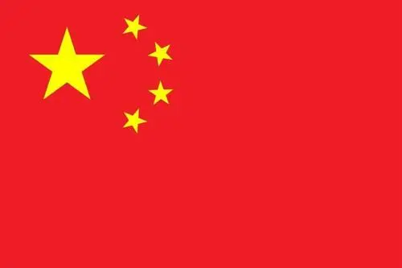

.jpg)

Total carbon emissions
2020-6 billion tons
China emits more than 6 billion tons of carbon dioxide into the atmosphere every year, ranking first in the world. The Chinese government is facing unprecedented international pressure on greenhouse gas emission reduction.
Analysis
In 1995, the total carbon emissions of various industries in China were 272.31 billion tons, but the carbon emissions of various industries were significantly different. The carbon emissions of industries were uneven, accounting for more than
1% in 13 industries, accounting for 92.2% in total. Among them, the carbon emission of power, gas and water supply industry accounts for 38.6% of the total carbon emission (the amount of carbon emission reaches 1051.9 million tons), other
non-metallic mineral products account for 14%, and base metals and metal products account for 11.2%. The carbon emission of automobile and motorcycle sales, maintenance and fuel retail industry is the lowest, only 622100 tons, accounting
for 0.002% of the overall carbon emission of the industry in 1995. This shows the difference in the amount and share of carbon emission of various industries.
This situation exists not only in 1995, but also in other years, which also shows that there are great differences in carbon emissions in various industries. In 2002, the total carbon emission of various industries in China was 3.071.6
billion tons, accounting for more than 1% of 12 industries, accounting for 92.6% in total. Among them, the industry with the largest carbon emission is still the supply industry of electric power, gas and water. The carbon emission
of this industry is 1568.8 million tons, accounting for more than 50% of the total carbon emission, reaching 51.1%. The second and third industries with the share of carbon emission are still non-metallic mineral products and basic
metal and metal products, accounting for 10.39% and 9.8% respectively. The industry with the smallest carbon emission is still the automobile and motorcycle sales and maintenance and fuel retail industry, with a carbon emission of
62800 tons, accounting for 0.002% of the total carbon emission. The ranking of carbon emission share of various industries is continuous in time.
prevention
China's independent contribution is a package plan, which includes both mitigation and adaptation, as well as its position and objectives in the global response to climate change. We have determined that China's carbon dioxide emissions will
reach the peak around 2030 and strive to reach the peak earlier. In addition, we will strive to reduce the proportion of non fossil energy in primary energy by 60-65% in 2030 compared with that in 2005, and increase the forest stock by
4.5 billion cubic meters, which are some of our goals in mitigation.